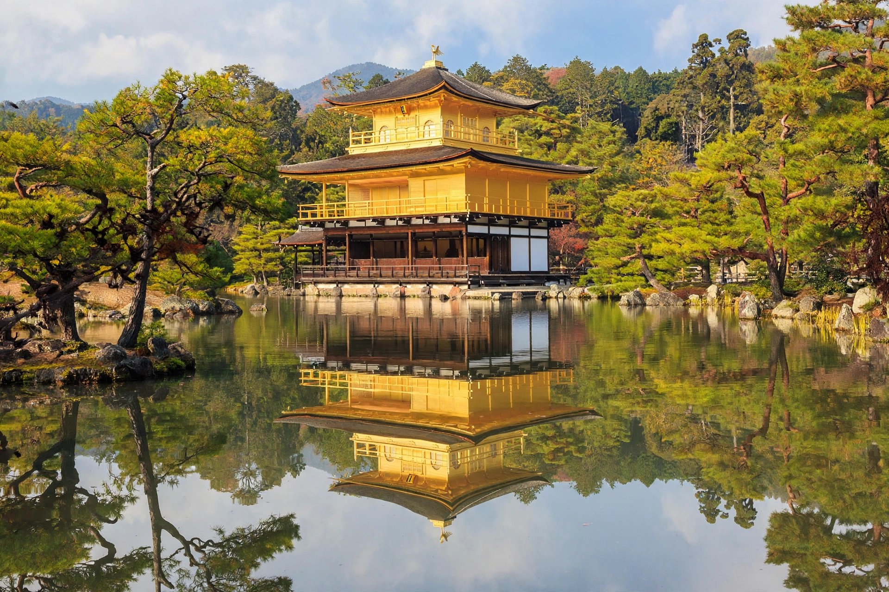

| Muromachi period | |
|---|---|
| Dates | 1336 – 1573 |
| Shogunate | Ashikaga shogunate |
| Capital | Kyoto (Muromachi district) |
| Preceded by | Kenmu Restoration, Kamakura period |
| Followed by | Azuchi–Momoyama period |
The Muromachi period (室町時代, Muromachi jidai, also known as the Muromachi era or Ashikaga era) is a division of Japanese history running from approximately 1336 to 1573. The period marks the governance of the Muromachi or Ashikaga shogunate, officially established in 1338 by the shogun Ashikaga Takauji, after the brief Kenmu Restoration (1333–1336) of imperial rule was brought to a close.

The period began in schism: Emperor Go-Daigo, driven from Kyoto, maintained a Southern Court at Yoshino while the Ashikaga installed a rival Northern Court in Kyoto — the Nanboku-chō period, which lasted until the courts reunified in 1392 under Ashikaga Yoshimitsu. Yoshimitsu built the Golden Pavilion, accepted investiture as "King of Japan" from the Ming emperor, and opened lucrative tally trade with China.
Muromachi culture was shaped by Zen Buddhism: ink painting by masters such as Sesshū Tōyō, the rock garden of Ryōan-ji, Noh theatre developed by Kan'ami and Zeami, the tea ceremony, and ikebana all flourished. The Higashiyama culture of Ashikaga Yoshimasa favoured the aesthetics of wabi — rustic simplicity — reflected in the Silver Pavilion (Ginkaku-ji).
The ruinous Ōnin War (1467–1477), a succession dispute within the shogunate, devastated Kyoto and destroyed Ashikaga authority, opening the Sengoku period of warring daimyo. The shogunate lingered until 1573, when Oda Nobunaga drove the last shogun, Ashikaga Yoshiaki, from Kyoto.
Ashikaga shogunate · Sengoku period · Kinkaku-ji · Nanboku-chō period